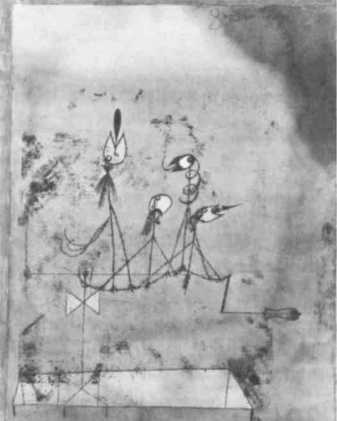

A child in the dark, gripped with fear, comforts himself by singing under his breath. He walks and halts to his song. Lost, he takes shelter, or orients himself with his little song as best he can. The song is like a rough sketch of a calming and stabilizing, calm and stable, center in the heart of chaos. Perhaps the child skips as he sings, hastens or slows his pace. But the song itself is already a skip: it jumps from chaos to the beginnings of order in chaos and is in danger of breaking apart at any moment. There is always sonority in Ariadne’s thread. Or the song of Orpheus.
Now we are at home. But home does not preexist: it was necessary to draw a circle around that uncertain and fragile center, to organize a limited space. Many, very diverse, components have a part in this, landmarks and marks of all kinds. This was already true of the previous case. But now the components are used for organizing a space, not for the momentary deter mination of a center. The forces of chaos are kept outside as much as possi ble, and the interior space protects the germinal forces of a task to fulfill or a deed to do. This involves an activity of selection, elimination and extrac tion, in order to prevent the interior forces of the earth from being sub merged, to enable them to resist, or even to take something from chaos across the filter or sieve of the space that has been drawn. Sonorous or vocal components are very important: a wall of sound, or at least a wall with some sonic bricks in it. A child hums to summon the strength for the schoolwork she has to hand in. A housewife sings to herself, or listens to the radio, as she marshals the antichaos forces of her work. Radios and televi sion sets are like sound walls around every household and mark territories (the neighbor complains when it gets too loud). For sublime deeds like the foundation of a city or the fabrication of a golem, one draws a circle, or bet ter yet walks in a circle as in a children’s dance, combining rhythmic vowels and consonants that correspond to the interior forces of creation as to the differentiated parts of an organism. A mistake in speed, rhythm, or har mony would be catastrophic because it would bring back the forces of chaos, destroying both creator and creation.
Finally, one opens the circle a crack, opens it all the way, lets some one in, calls someone, or else goes out oneself, launches forth. One opens the circle not on the side where the old forces of chaos press against it but in another region, one created by the circle itself. As though the circle tended on its own to open onto a future, as a function of the working forces it shel ters. This time, it is in order to join with the forces of the future, cosmic forces. One launches forth, hazards an improvisation. But to improvise is to join with the World, or meld with it. One ventures from home on the thread of a tune. Along sonorous, gestural, motor lines that mark the customary path of a child and graft themselves onto or begin to bud “lines of drift” with different loops, knots, speeds, movements, gestures, and sonorities.1
These are not three successive moments in an evolution. They are three aspects of a single thing, the Refrain (ritournelle). They are found in tales (both horror stories and fairy tales), and in lieder as well. The refrain has all three aspects, it makes them simultaneous or mixes them: sometimes, sometimes, sometimes. Sometimes chaos is an immense black hole in which one endeavors to fix a fragile point as a center. Sometimes one organizes around that point a calm and stable “pace” (rather than a form): the black hole has become a home. Sometimes one grafts onto that pace a breakaway from the black hole. Paul Klee presented these three aspects, and their interlinkage, in a most profound way. He calls the black hole a “gray point” for pictorial reasons. The gray point starts out as nonlocal-izable, nondimensional chaos, the force of chaos, a tangled bundle of aberrant lines. Then the point “jumps over itself and radiates a dimensional space with horizontal layers, vertical cross sections, unwritten customary lines, a whole terrestrial interior force (this force also appears, at a more relaxed pace, in the atmosphere and in water). The gray point (black hole) has thus jumped from one state to another, and no longer represents chaos but the abode or home. Finally, the point launches out of itself, impelled by wandering centrifugal forces that fan out to the sphere of the cosmos: one “tries convulsively to fly from the earth, but at the following level one actually rises above it… powered by centrifugal forces that triumph over gravity.”2
The role of the refrain has often been emphasized: it is territorial, a territorial assemblage. Bird songs: the bird sings to mark its territory. The Greek modes and Hindu rhythms are themselves territorial, provincial, regional. The refrain may assume other functions, amorous, professional or social, liturgical or cosmic: it always carries earth with it; it has a land (sometimes a spiritual land) as its concomitant; it has an essential relation to a Natal, a Native. A musical “nome” is a little tune, a melodic formula that seeks recognition and remains the bedrock or ground of polyphony
(cantus firmus). The nomos as customary, unwritten law is inseparable from a distribution of space, a distribution in space. By that token, it is ethos, but the ethos is also the Abode.3 Sometimes one goes from chaos to the threshold of a territorial assemblage: directional components, infra-assemblage. Sometimes one organizes the assemblage: dimensional components, intra-assemblage. Sometimes one leaves the territorial assemblage for other assemblages, or for somewhere else entirely: interassem-blage, components of passage or even escape. And all three at once. Forces of chaos, terrestrial forces, cosmic forces: all of these confront each other and converge in the territorial refrain. From chaos, Milieus and Rhythms are born. This is the concern of very ancient cosmogonies. Chaos is not without its own directional components, which are its own ecstasies. We have seen elsewhere how all kinds of milieus, each defined by a component, slide in relation to one another, over one another. Every milieu is vibratory, in other words, a block of space-time constituted by the periodic repetition of the component. Thus the living thing has an exterior milieu of materials, an interior milieu of composing elements and composed substances, an intermediary milieu of membranes and limits, and an annexed milieu of energy sources and actions-perceptions. Every milieu is coded, a code being defined by periodic repetition; but each code is in a perpetual state of transcoding or transduction. Transcoding or transduction is the manner in which one milieu serves as the basis for another, or conversely is established atop another milieu, dissipates in it or is constituted in it. The notion of the milieu is not unitary: not only does the living thing continually pass from one milieu to another, but the milieus pass into one another, they are essentially communicating. The milieus are open to chaos, which threatens them with exhaustion or intrusion. Rhythm is the milieus’ answer to chaos. What chaos and rhythm have in common is the in-between — between two milieus, rhythm-chaos or the chaosmos: “Between night and day, between that which is constructed and that which grows naturally, between mutations from the inorganic to the organic, from plant to animal, from animal to humankind, yet without this series constituting a progression …” In this in-between, chaos becomes rhythm, not inexorably, but it has a chance to. Chaos is not the opposite of rhythm, but the milieu of all milieus. There is rhythm whenever there is a transcoded passage from one milieu to another, a communication of milieus, coordination between heterogeneous space-times. Drying up, death, intrusion have rhythm. It is well known that rhythm is not meter or cadence, even irregular meter or cadence: there is nothing less rhythmic than a military march. The tom-tom is not 1 -2, the waltz is not 1, 2, 3, music is not binary or ternary, but rather forty-seven basic meters, as in Turkish music. Meter, whether regular or not, assumes a coded form whose unit of measure may vary, but in a noncommunicating milieu, whereas rhythm is the Unequal or the Incommensurable that is always undergoing transcoding. Meter is dogmatic, but rhythm is critical; it ties together critical moments, or ties itself together in passing from one milieu to another. It does not operate in a homogeneous space-time, but by heterogeneous blocks. It changes direction. Bachelard is right to say that “the link between truly active moments (rhythm) is always effected on a different plane from the one upon which the action is carried out.”4 Rhythm is never on the same plane as that which has rhythm. Action occurs in a milieu, whereas rhythm is located between two milieus, or between two intermilieus, on the fence, between night and day, at dusk, twilight or Zwielicht, Haecceity. To change milieus, taking them as you find them: Such is rhythm. Landing, splashdown, takeoff… This easily avoids an aporia that threatened to introduce meter into rhythm, despite all the declarations of intent to the contrary: How can one proclaim the constituent inequality of rhythm while at the same time admitting implied vibrations, periodic repetitions of components? A milieu does in fact exist by virtue of a periodic repetition, but one whose only effect is to produce a difference by which the milieu passes into another milieu. It is the difference that is rhythmic, not the repetition, which nevertheless produces it: productive repetition has nothing to do with reproductive meter. This is the “critical solution of the antinomy.”
One case of transcoding is particularly important: when a code is not content to take or receive components that are coded differently, and instead takes or receives fragments of a different code as such. The first case pertains to the leaf-water relation, the second to the spider-fly relation. It has often been noted that the spider web implies that there are sequences of the fly’s own code in the spider’s code; it is as though the spider had a fly in its head, a fly “motif,” a fly “refrain.” The implication may be reciprocal, as with the wasp and the orchid, or the snapdragon and the bumblebee. Jakob von Uexkiill has elaborated an admirable theory of transcodings. He sees the components as melodies in counterpoint, each of which serves as a motif for another: Nature as music.5 Whenever there is transcoding, we can be sure that there is not a simple addition, but the constitution of a new plane, as of a surplus value. A melodic or rhythmic plane, surplus value of passage or bridging. The two cases, however, are never pure; they are in reality mixed (for example, the relation of the leaf, this time not to water in general but to rain).
Still, we do not yet have a Territory, which is not a milieu, not even an additional milieu, nor a rhythm or passage between milieus. The territory is in fact an act that affects milieus and rhythms, that “territorializes” them. The territory is the product of a territorialization of milieus and rhythms. It amounts to the same thing to ask when milieus and rhythms become territorialized, and what the difference is between a nonterritorial animal and a territorial animal. A territory borrows from all the milieus; it bites into them, seizes them bodily (although it remains vulnerable to intrusions). It is built from aspects or portions of milieus. It itself has an exterior milieu, an interior milieu, an intermediary milieu, and an annexed milieu. It has the interior zone of a residence or shelter, the exterior zone of its domain, more or less retractable limits or membranes, intermediary or even neutralized zones, and energy reserves or annexes. It is by essence marked by “indexes,” which may be components taken from any of the milieus: materials, organic products, skin or membrane states, energy sources, action-perception condensates. There is a territory precisely when milieu components cease to be directional, becoming dimensional instead, when they cease to be functional to become expressive. There is a territory when the rhythm has expressiveness. What defines the territory is the emergence of matters of expression (qualities). Take the example of color in birds or fish: color is a membrane state associated with interior hormonal states, but it remains functional and transitory as long as it is tied to a type of action (sexuality, aggressiveness, flight). It becomes expressive, on the other hand, when it acquires a temporal constancy and a spatial range that make it a territorial, or rather territorializing, mark: a signature.6 The question is not whether color resumes its functions or fulfills new ones in the territory. It is clear that it does, but this reorganization of functions implies first of all that the component under consideration has become expressive and that its meaning, from this standpoint, is to mark a territory. The same species of birds may have colored and uncolored representatives; the colored birds have a territory, whereas the all-white ones are gregarious. We know what role urine and excrement play in marking, but territorial excrement, for example, in the rabbit, has a particular odor owing to specialized anal glands. Many monkeys, when serving as guards, expose their brightly colored sexual organs: the penis becomes a rhythmic and expressive color-carrier that marks the limits of the territory.7 A milieu component becomes both a quality and a property, quale and proprium. It has been remarked how quick this becoming is in many cases, the rapidity with which a territory is constituted at the same time as expressive qualities are selected or produced. The brown stagemaker (Scenopoeetes dentirostris) lays down landmarks each morning by dropping leaves it picks from its tree, and then turning them upside down so the paler underside stands out against the dirt: inversion produces a matter of expression.8
The territory is not primary in relation to the qualitative mark; it is the mark that makes the territory. Functions in a territory are not primary; they presuppose a territory-producing expressiveness. In this sense, the territory, and the functions performed within it, are products of territorialization. Territorialization is an act of rhythm that has become expressive, or of milieu components that have become qualitative. The marking of a territory is dimensional, but it is not a meter, it is a rhythm. It retains the most general characteristic of rhythm, which is to be inscribed on a different plane than that of its actions. But now the distinction between the two planes is between territorializing expressions and territorialized functions. That is why we cannot accept a thesis like Lorenz’s, which tends to make aggressiveness the basis of the territory: the territory would then be the product of the phylogenetic evolution of an instinct of aggression, starting at the point where that instinct became intraspecific, was turned against the animal’s own kind. A territorial animal would direct its aggressiveness against members of its own species; the species would gain the selective advantage of distributing its members throughout a space where each would have its own place.9 This ambiguous thesis, which has dangerous political overtones, seems to us to have little foundation. It is obvious that the function of aggression changes pace when it becomes intraspecific. but this reorganization of the function, rather than explaining the territory, presupposes it. there are numerous reorganizations within the territory, which also affect sexuality, hunting, etc.; there are even new functions, such as building a place to live. These functions are organized or created only because they are territorialized, and not the other way around. The T factor, the territorializing factor, must be sought elsewhere: precisely in the becoming-expressive of rhythm or melody, in other words, in the emergence or proper qualities (color, odor, sound, silhouette…).
Can this becoming, this emergence, be called Art? That would make the territory a result of art. The artist: the first person to set out a boundary stone, or to make a mark. Property, collective or individual, is derived from that even when it is in the service of war and oppression. Property is fundamentally artistic because art is fundamentally poster, placard. As Lorenz says, coral fish are posters. The expressive is primary in relation to the possessive; expressive qualities, or matters of expression, are necessarily appropriative and constitute a having more profound than being.10 Not in the sense that these qualities belong to a subject, but in the sense that they delineate a territory that will belong to the subject that carries or produces them. These qualities are signatures, but the signature, the proper name, is not the constituted mark of a subject, but the constituting mark of a domain, an abode. The signature is not the indication of a person; it is the chancy formation of a domain. Abodes have proper names, and are inspired. “The inspired and their abodes …”; it is with the abode that inspiration arises. No sooner do I like a color that I make it my standard or placard. One puts one’s signature on something just as one plants one’s flag on a piece of land. A high school supervisor stamped all the leaves strewn about the school yard and then put them back in their places. He had signed. Territorial marks are readymades. And what is called art brut in not at all pathological or primitive; it is merely this constitution, this freeing, of matters of expression in the movement of territoriality: the base or ground of art. Take anything and make it a matter of expression. The stagemaker practices art brut. Artists are stagemakers, even when they tear up their own posters. Of course, from this standpoint art is not the privilege of human beings. Messiaen is right in saying that many birds are not only virtuosos but artists, above all in their territorial songs (if a robber “improperly wishes to occupy a spot which doesn’t belong to it, the true owner sings and sings so well that the predator goes away…. If the robber sings better than the true proprietor, the proprietor yields his place”).11 The refrain is rhythm and melody that have been territorialized because they have become expressive — and have become expressive because they are territorializing. We are not going in circles. What we wish to say is that there is a self-movement of expressive qualities. Expressiveness is not reducible to the immediate effects of an impulse triggering an action in a milieu: effects of that kind are subjective impressions or emotions rather than expressions (as, for example, the temporary color a freshwater fish takes on under a given impulse). On the other hand, expressive qualities, the colors of the coral fish, for example, are auto-objective, in other words, find an objectivity in the territory they draw.
What is this objective movement? What does a matter do as a matter of expression? It is first of all a poster or placard, but that is not all it is. It merely takes that route. The signature becomes style. In effect, expressive qualities or matters of expression enter shifting relations with one another that “express” the relation of the territory they draw to the interior milieu of impulses and exterior milieu of circumstances. To express is not to depend upon; there is an autonomy of expression. On the one hand, expressive qualities entertain internal relations with one another that constitute territorial motifs; sometimes these motifs loom above the internal impulses, sometimes they are superposed upon them, sometimes they ground one impulse in another, sometimes they pass and cause a passage from one impulse to another, sometimes they insert themselves between them — but they are not themselves “pulsed.” Sometimes these nonpulsed motifs arise in a fixed form, or seem to arise that way, but at other times the same ones, or others, take on variable speed and articulation; it is as much their variability as their fixity that makes them independent of the drives they combine or neutralize. “We know that our dogs go through motions of smelling, seeking, chasing, biting, and shaking to death with equal enthusiasm whether they are hungry or not.”12 Another example is the dance of the stickleback. Its zigzag is a motif in which the zig is tied to an aggressive drive toward the partner, and the zag to a sexual drive toward the nest; yet the zig and the zag are accented, or even oriented, differently. On the other hand, expressive qualities also entertain other internal relations that produce territorial counterpoints: this refers to the manner in which they constitute points in the territory that place the circumstances of the external milieu in counterpoint. For example, an enemy approaches or suddenly appears, or rain starts to fall, the sun rises, the sun sets… Here again, the points or counterpoints are autonomous in their fixity or variability in relation to the circumstances of the exterior milieu whose relation to the territory they express. For this relation can be given without the circumstances being given, just as the relation to the impulses can be given without the impulse being given. And even when the impulses and circumstances are given, the relation is prior to what it places in relation. Relations between matters of expression express relations of the territory to internal impulses and external circumstances: they have an autonomy within this very expression. In truth, territorial motifs and counterpoints explore potentialities of the interior or exterior milieu. Ethologists have grouped these phenomena under the concept of “ritualization” and have demonstrated the link between animal rituals and territory. But this word is not necessarily appropriate for these nonpulsed motifs and nonlocalized counterpoints, since it accounts for neither their variability nor their fixity. It is not one or the other, fixity or variability; certain motifs or points are fixed only if others are variable, or else they are fixed on one occasion and variable on another.
We should say, rather, that territorial motifs form rhythmic faces or characters, and that territorial counterpoints form melodic landscapes. There is a rhythmic character when we find that we no longer have the simple situation of a rhythm associated with a character, subject, or impulse. The rhythm itself is now the character in its entirety; as such, it may remain constant, or it may be augmented or diminished by the addition or subtraction of sounds or always increasing or decreasing durations, and by an amplification or elimination bringing death or resuscitation, appearance or disappearance. Similarly, the melodic landscape is no longer a melody associated with a landscape; the melody itself is a sonorous landscape in counterpoint to a virtual landscape. That is how we get beyond the placard stage: although each expressive quality, each matter of expression considered in itself, is a placard or poster, the analysis of them is nevertheless abstract. Expressive qualities entertain variable or constant relations with one another (that is what matters of expression do); they no longer constitute placards that mark a territory, but motifs and counterpoints that express the relation of the territory to interior impulses or exterior circumstances, whether or not they are given. No longer signatures, but a style. What objectively distinguishes a musician bird from a nonmusician bird is precisely this aptitude for motifs and counterpoints that, if they are variable, or even when they are constant, make matters of expression something other than a poster — a style — since they articulate rhythm and harmonize melody. We can then say that the musician bird goes from sadness to joy or that it greets the rising sun or endangers itself in order to sing or sings better than another, etc. None of these formulations carries the slightest risk of anthropomorphism, or implies the slightest interpretation. It is instead a kind of geomorphism. The relation to joy and sadness, the sun, danger, perfection, is given in the motif and counterpoint, even if the term of each of these relations is not given. In the motif and the counterpoint, the sun, joy or sadness, danger, become sonorous, rhythmic, or melodic.13
Human music also goes this route. For Swann, the art lover, Vinteuil’s little phrase often acts as a placard associated with the Bois de Boulogne and the face and character of Odette: as if it reassured Swann that the Bois de Boulogne was indeed his territory, and Odette his possession. There is already something quite artistic in this way of hearing music. Debussy criticized Wagner, comparing his leitmotifs to signposts signaling the hidden circumstances of a situation, the secret impulses of a character. The criticism is accurate, on one level or at certain moments. But as the work develops, the motifs increasingly enter into conjunction, conquer their own plane, become autonomous from the dramatic action, impulses, and situations, and independent of characters and landscapes; they themselves become melodic landscapes and rhythmic characters continually enriching their internal relations. They may then remain relatively constant, or on the contrary grow or diminish, expand or contract, vary in the speed at which they unfold: in both cases, they are no longer pulsed and localized, and even the constants are in the service of variation; the more provisory they are, the more they display the continuous variation they resist, the more rigid they become.14 Proust was among the first to underscore this life of the Wagnerian motif. Instead of the motif being tied to a character who appears, the appearance of the motif itself constitutes a rhythmic character in “the plenitude of a music that is indeed filled with so many strains, each of which is a being.”15 It is not by chance that the apprenticeship of the Recherche pursues an analogous discovery in relation to Vinteuil’s little phrases: they do not refer to a landscape; they carry and develop within themselves landscapes that do not exist on the outside (the white sonata and red septet…). The discovery of the properly melodic landscape and the properly rhythmic character marks the moment of art when it ceases to be a silent painting on a signboard. This may not be art’s last word, but art went that route, as did the bird: motifs and counterpoints that form an autodevelopment, in other words, a style. The interiorization of the melodic or sonorous landscape finds its exemplary form in Liszt and that of the rhythmic character in Wagner. More generally, the lied is the musical art of the landscape, the most pictorial, impressionist form of music. But the two poles are so closely bound that in the lied as well Nature appears as a rhythmic character with infinite transformations.
The territory is first of all the critical distance between two beings of the same species: Mark your distance. What is mine is first of all my distance; I possess only distances. Don’t anybody touch me, I growl if anyone enters my territory, I put up placards. Critical distance is a relation based on matters of expression. It is a question of keeping at a distance the forces of chaos knocking at the door. Mannerism: the ethos is both abode and manner, homeland and style. This is evident in territorial dances termed baroque or mannerist, in which each pose, each movement, establishes a distance of this kind (sarabands, allemandes, bourrees, gavottes…).16 There is a whole art of poses, postures, silhouettes, steps, and voices. Two schizophrenics converse or stroll according to laws of boundary and territory that may escape us. How very important it is, when chaos threatens, to draw an inflatable, portable territory. If need be, I’ll put my territory on my own body, I’ll territorialize my body: the house of the tortoise, the hermitage of the crab, but also tattoos that make the body a territory. Critical distance is not a meter, it is a rhythm. But the rhythm, precisely, is caught up in a becoming that sweeps up the distances between characters, making them rhythmic characters that are themselves more or less distant, more or less combinable (intervals). Two animals of the same sex and species confront each other: the rhythm of the first one “expands” when it approaches its territory or the center of its territory; the rhythm of the second contracts when it moves away from its territory. Between the two, at the boundaries, an oscillational constant is established: an active rhythm, a passively endured rhythm, and a witness rhythm?17 Or else the animal opens its territory a crack for a partner of the opposite sex: a complex rhythmic character forms through duets, antiphonal or alternating singing, as in the case of African shrikes. Furthermore, we must simultaneously take into account two aspects of the territory: it not only ensures and regulates the coexistence of members of the same species by keeping them apart, but makes possible the coexistence of a maximum number of different species in the same milieu by specializing them. Members of the same species enter into rhythmic characters at the same time as different species enter into melodic landscapes; for the landscapes are peopled by characters and the characters belong to landscapes. An example is Messiaen’s Chrono-chromie, with its eighteen bird songs forming autonomous rhythmic characters and simultaneously realizing an extraordinary landscape in complex counterpoint, with invented or implicit chords.
Not only does art not wait for human beings to begin, but we may ask if art ever appears among human beings, except under artificial and belated conditions. It has often been noted that human art was for a long time bound up with work and rites of a different nature. Saying this, however, perhaps has no more weight than saying that art begins with human beings. For it is true that a territory has two notable effects: a reorganization of functions and a regrouping of forces. On the one hand, when functional activities are territorialized they necessarily change pace (the creation of new functions such as building a dwelling, or the transformation of old functions, as when aggressiveness changes nature and becomes intra-specific). This is like a nascent theme of specialization or professionalism: if the territorial refrain so often passes into professional refrains, it is because professions assume that various activities are performed in the same milieu, and that the same activity has no other agents in the same territory. Professional refrains intersect in the milieu, like merchants’ cries, but each marks a territory within which the same activity cannot be performed, nor the same cry ring out. In animals as in human beings, there are rules of critical distance for competition: my stretch of sidewalk. In short, a territorialization of functions is the condition for their emergence as “occupations” or “trades.” Thus intraspecific or specialized aggressiveness is necessarily a territorialized aggressiveness; it does not explain the territory since it itself derives from it. It is immediately apparent that all activities within the territory adopt a new practical pace. But that is no reason to conclude that art in itself does not exist here, for it is present in the territorializing factor that is the necessary condition for the emergence of the work-function.
The situation is the same if we consider the other effect of territorialization. That other effect, which relates not to occupations but to rites and religions, consists in this: the territory groups all the forces of the different milieus together in a single sheaf constituted by the forces of the earth. The attribution of all the diffuse forces to the earth as receptacle or base takes place only at the deepest level of each territory. “The surrounding milieu was experienced as a unity; it is very hard to distinguish in these primal intuitions what belongs properly to the earth from what is merely manifested through the earth: mountains, forests, water, vegetation.”18 The forces of air and water, bird and fish, thus become forces of the earth. Moreover, although in extension the territory separates the interior forces of the earth from the exterior forces of chaos, the same does not occur in “intension,” in the dimension of depth, where the two types of force clasp and are wed in a battle whose only criterion and stakes is the earth. There is always a place, a tree or grove, in the territory where all the forces come together in a hand-to-hand combat of energies. The earth is this close embrace.19 This intense center is simultaneously inside the territory, and outside several territories that converge on it at the end of an immense pilgrimage (hence the ambiguities of the “natal”). Inside or out, the territory is linked to this intense center, which is like the unknown homeland, terrestrial source of all forces friendly and hostile, where everything is decided.20 So we must once again acknowledge that religion, which is common to human beings and animals, occupies territory only because it depends on the raw aesthetic and territorializing factor as its necessary condition. It is this factor that at the same time organizes the functions of the milieu into occupations and binds the forces of chaos in rites and religions, which are forces of the earth. Territorializing marks simultaneously develop into motifs and counterpoints, and reorganize functions and regroup forces. But by virtue of this, the territory already unleashes something that will surpass it.
We always come back to this “moment”: the becoming-expressive of rhythm, the emergence of expressive proper qualities, the formation of matters of expression that develop into motifs and counterpoints. We therefore need a notion, even an apparently negative one, that can grasp this fictional or raw moment. The essential thing is the disjunction noticeable between the code and the territory. The territory arises in a free margin of the code, one that is not indeterminate but rather is determined differently. Each milieu has its own code, and there is perpetual transcoding between milieus; the territory, on the other hand, seems to form at the level of a certain decoding. Biologists have stressed the importance of these determined margins, which are not to be confused with mutations, in other words, changes internal to the code: here, it is a question of duplicated genes or extra chromosomes that are not inside the genetic code, are free of function, and offer a free matter for variation.21 But it is very unlikely that this kind of matter could create new species independently of mutations, unless it were accompanied by events of another order capable of multiplying the interactions of the organism with its milieus. Territorialization is precisely such a factor that lodges on the margins of the code of a single species and gives the separate representatives of that species the possibility of differentiating. It is because there is a disjunction between the territory and the code that the territory can indirectly induce new species. Wherever territoriality appears, it establishes an intraspecific critical distance between members of the same species; it is by virtue of its own disjunction in relation to specific differences that it becomes an oblique, indirect means of differentiation. From all of these standpoints, decoding appears as the “negative” of the territory, and the most obvious distinction between territorial animals and nonterritorial animals is that the former are much less coded than the latter. We have said enough bad things about the territory that we can now evaluate all the creations that tend toward it, occur within it, and result or will result from it.
We have gone from forces of chaos to forces of the earth. From milieus to territory. From functional rhythms to the becoming-expressive of rhythm. From phenomena of transcoding to phenomena of decoding. From milieu functions to territorialized functions. It is less a question of evolution than of passage, bridges and tunnels. We saw that milieus continually pass into one another. Now we see that the milieus pass into the territory. The expressive qualities we term aesthetic are certainly not “pure” or symbolic qualities but proper qualities, in other words, appropriative qualities, passages from milieu components to territory components. The territory itself is a place of passage. The territory is the first assemblage, the first thing to constitute an assemblage; the assemblage is fundamentally territorial. But how could it not already be in the process of passing into something else, into other assemblages? That is why we could not talk about the constitution of the territory without also talking about its internal organization. We could not describe the infra-assemblage (posters or placards) without also discussing the intra-assemblage (motifs and counterpoints). Nor can we say anything about the intra-assemblage without already being on the path to other assemblages, or elsewhere. The passage of the Refrain. The refrain moves in the direction of the territorial assemblage and lodges itself there or leaves. In a general sense, we call a refrain any aggregate of matters of expression that draws a territory and develops into territorial motifs and landscapes (there are optical, gestural, motor, etc., refrains). In the narrow sense, we speak of a refrain when an assemblage is sonorous or “dominated” by sound — but why do we assign this apparent privilege to sound?
We are now in the intra-assemblage. Its organization is very rich and complex. It includes not only the territorial assemblage but also assembled, territorialized functions. Take the Troglodytidae, the wren family: the male takes possession of his territory and produces a “music box refrain” as a warning to possible intruders; he builds his own nests in his territory, sometimes as many as a dozen; when a female arrives, he sits in front of a nest, invites her to visit, hangs his wings, and lowers the intensity of his song, reduced to a mere trill.22 It seems that the nesting function is highly territorialized, since the nests are prepared by the male alone before the arrival of the female, who only visits and completes them; the “courtship” function is also territorialized, but to a lesser degree, since the territorial refrain becomes seductive by changing in intensity. All kinds of heterogeneous elements show up in the intra-assemblage: not only the assemblage marks that group materials, colors, odors, sounds, postures, etc., but also the various elements of given assembled behaviors that enter into a motif. For example, a display behavior is composed of a dance, clicking of the beak, an exhibition of colors, a posture with neck outstretched, cries, smoothing of the feathers, bows, a refrain… The first question to be asked is what holds these territorializing marks, territorial motifs, and territorialized functions together in the same intra-assemblage. This is a question of consistency: the “holding together” of heterogeneous elements. At first, they constitute no more than a fuzzy set, a discrete set that later takes on consistency. But another question seems to interrupt or cut across the first one. For in many cases, a territorialized, assembled function acquires enough independence to constitute a new assemblage, one that is more or less deterritorialized, en route to deterritorialization. There is no need to effectively leave the territory to go this route; but what just a minute ago was a constituted function in the territorial assemblage has become the constituting element of another assemblage, the element of passage to another assemblage. As in courtly love, a color ceases to be territorial and enters a “courtship” assemblage. The territorial assemblage opens onto the courtship assemblage, which is a social assemblage that has gained autonomy. That is what happens when it is specifically the sexual partner or the members of a group that are recognized, rather than the territory: The partner is then said to be a Tier mit der Heimvalenz, “an animal with home value.” There is therefore a distinction to be made between milieu groups and couples (without individual recognition), territorial groups and couples (in which there is only recognition inside the territory), and finally social groups and love couples (when there is recognition independent of place).23 Courtship, or the group, is no longer a part of the territorial assemblage; a courtship or group assemblage takes on autonomy — even though it may stay inside the territory. Conversely, in the new assemblage there is a reterritorialization on the member of the couple or members of the group that have-the-value-of (valence). This opening of the assemblage onto other assemblages can be analyzed in detail, and varies widely. For example, when the male does not make the nest and confines himself to transporting materials or mimicking the construction of a nest (as in Australian grass finches), he either courts the female holding a piece of stubble in his beak (genus Bathilda), uses the grass stem only in the initial stages of courtship or even beforehand (genera Aidemosyne and Lonchura), or pecks at the grass without offering it (genus Emblema).24 It could always be said that these “grass stem” behaviors are merely archaisms, or vestiges of nesting behavior. But the notion of behavior itself proves inadequate to this assemblage. For when the nest is no longer made by the male, nesting ceases to be a component of the territorial assemblage — it takes wing, so to speak, from the territory; furthermore, courtship, which now precedes nesting, itself becomes a relatively autonomous assemblage. In addition, the matter of expression, “grass stem,” acts as a component of passage between the territorial assemblage and the courtship assemblage. The fact that the grass stem has an increasingly rudimentary function in certain species, the fact that it tends to cancel out in the series under consideration, is not enough to make it a vestige, much less a symbol. A matter of expression is never a vestige or a symbol. The grass stem is a deterritorialized component, or one en route to deterritorialization. It is neither an archaism nor a transitional or part-object. It is an operator, a vector. It is an assemblage converter. The stem cancels out precisely because it is a component of passage from one assemblage to another. This viewpoint is confirmed by the fact that if the stem cancels out, another relay component replaces it or assumes greater importance, namely, the refrain, which is not only territorial but becomes amorous and social, and changes accordingly.25 The question of why, in the constitution of new assemblages, the sound component “refrain” has a stronger valence than the gestural component “grass stem” can be considered only later on. The important thing for now is to note this formation of new assemblages within the territorial assemblage, and this movement from the intra-assemblage to interassemblages by means of components of passage and relay: An innovative opening of the territory onto the female, or the group. Selective pressure proceeds by way of interassemblages. It is as though forces of deterritorialization affected the territory itself, causing us to pass from the territorial assemblage to other types of assemblages (courtship or sexuality assemblages, group or social assemblages). The grass stem and the refrain are two agents of these forces, two agents of deterritorialization.
The territorial assemblage continually passes into other assemblages. Likewise, the infra-assemblage is inseparable from the intra-assemblage, as is the intra-assemblage from interassemblages; yet these passages are not necessary but rather take place “on a case-by-case basis.” The reason is simple: the intra-assemblage, the territorial assemblage, territorializes functions and forces (sexuality, aggressiveness, gregariousness, etc.), and in the process of territorializing them, transforms them. But these territorialized functions and forces can suddenly take on an autonomy that makes them swing over into other assemblages, compose other deterritorialized assemblages. In the intra-assemblage, sexuality may appear as a territorialized function, but it can just as easily draw a line of deterritorialization that describes another assemblage; there are therefore quite variable relations between sexuality and the territory, as if sexuality were keeping “its distance.” Profession, trade, and specialty imply territorialized activities, but they can also take wing from the territory, building a new assemblage around themselves, and between professions. A territorial or territorialized component may set about budding, producing: this is the case for the refrain, so much so that we should perhaps call all cases of this kind refrains. This ambiguity between the territory and deterritorialization is the ambiguity of the Natal. It is understood much more clearly if it is borne in mind that the territory has an intense center at its profoundest depths; but as we have seen, this intense center can be located outside the territory, at the point of convergence of very different and very distant territories. The Natal is outside. We may cite a certain number of troubling and well-known, more or less mysterious, cases illustrating prodigious takeoffs from the territory, displaying a vast movement of deterritorialization directly plugged into the territories and permeating them through and through: (1) pilgrimages to the source, as among salmon; (2) supernumerary assemblies, such as those of locusts or chaffinches, etc. (tens of millions of chaffinches near Thoune in 1950-1951); (3) magnetic or solar-guided migrations; (4) long marches, such as those of the lobsters.26
Whatever the causes of each of these movements, it is clear that the nature of the movement is different. It is no longer adequate to say that there is interassemblage, passage from a territorial assemblage to another type of assemblage; rather, we should say that one leaves all assemblages behind, that one exceeds the capacities of any possible assemblage, entering another plane. In effect, there is no longer a milieu movement or rhythm, nor a territorialized or territorializing movement or rhythm; there is something of the Cosmos in these more ample movements. The localization mechanisms are still extremely precise, but the localization has become cosmic. These are no longer territorialized forces bundled together as forces of the earth; they are the liberated or regained forces of a deterritorialized Cosmos. In migration, the sun is no longer the terrestrial sun reigning over a territory, even an aerial one; it is the celestial sun of the Cosmos, as in the two Jerusalems, the Apocalypse. Leaving aside these two grandiose cases where deterritorialization becomes absolute while losing nothing of its precision (because it weds cosmic variables), we must remark that the territory is constantly traversed by movements of deterritorialization that are relative and may even occur in place, by which one passes from the intra-assemblage to interassemblages, without, however, leaving the territory or issuing from the assemblages in order to wed the Cosmos. A territory is always en route to an at least potential deterritorialization, even though the new assemblage may operate a reterritoriali-zation (something that “has-the-value-of’ home). We saw that the territory constituted itself on a margin of decoding affecting the milieu; we now see that there is a margin of deterritorialization affecting the territory itself. There is a series of unclaspings. The territory is inseparable from certain coefficients of deterritorialization (which can be evaluated in each case) that place the relations of each territorialized function to the territory in variation, as well as the relations of the territory to each deterritorialized assemblage. It is the same “thing” that appears first as a territorialized function taken up in the intra-assemblage, and again as a deterritorialized or autonomous assemblage, as an interassemblage.
Refrains could accordingly be classified as follows: (1) territorial refrains that seek, mark, assemble a territory; (2) territorialized function refrains that assume a special function in the assemblage (the Lullaby that territorializes the child’s slumber, the Lover’s Refrain that territorializes the sexuality of the loved one, the Professional Refrain that territorializes trades and occupations, the Merchant Refrain that territorializes distribution and products); (3) the same, when they mark new assemblages, pass into new assemblages by means of deterritorialization-reterritorialization (nursery rhymes are a very complicated example: they are territorial refrains that are sung differently from neighborhood to neighborhood, sometimes from one street to the next; they distribute game roles and functions within the territorial assemblage; but they also cause the territory to pass into the game assemblage, which tends to become autonomous);27 (4) refrains that collect or gather forces, either at the heart of the territory, or in order to go outside it (these are refrains of confrontation or departure that sometimes bring on a movement of absolute deterritorialization: “Goodbye, I’m leaving and I won’t look back.” At infinity, these refrains must rejoin the songs of the Molecules, the newborn wailing of the fundamental Elements, as Millikan put it. They cease to be terrestrial, becoming cosmic: when the religious Nome blooms and dissolves in a molecular pantheist Cosmos, when the singing of the birds is replaced by combinations of water, wind, clouds, and fog. “Outside, the wind and the rain …” The Cosmos as an immense deterritorialized refrain).
The problem of consistency concerns the manner in which the components of a territorial assemblage hold together. But it also concerns the manner in which different assemblages hold together, with components of passage and relay. It may even be the case that consistency finds the totality of its conditions only on a properly cosmic plane, where all the disparate and heterogeneous elements are convoked. However, from the moment heterogeneities hold together in an assemblage or interassemblages a problem of consistency is posed, in terms of coexistence or succession, and both simultaneously. Even in a territorial assemblage, it may be the most deterritorialized component, the deterritorializing vector, in other words, the refrain, that assures the consistency of the territory. If we ask the general question, “What holds things together?”, the clearest, easiest answer seems to be provided by a formalizing, linear, hierarchized, centralized arborescent model. Take Tinbergen’s schema, which presents a coded linkage of spatiotemporal forms in the central nervous system: a higher functional center goes automatically into operation and releases an appetitive behavior in search of specific stimuli (the migrational center); through the intermediary of the stimulus, a second center that had been inhibited up to this point is freed and releases a new appetitive behavior (the territorial center); then other subordinate centers are activated, centers of fighting, nesting, courtship … until stimuli are found that release the corresponding executive acts.28 This kind of representation, however, is constructed of oversimplified binarities: inhibition-release, innate-acquired, etc. Etholo-gists have a great advantage over ethnologists: they did not fall into the structural danger of dividing an undivided “terrain” into forms of kinship, politics, economics, myth, etc. The ethologists have retained the integrality of a certain undivided “terrain.” But by orienting it along the axes of inhibition-release, innate-acquired, they risk reintroducing souls and centers at each locus and stage of linkage. That is why even the authors who stress the role of the peripheral and the acquired at the level of releasing stimuli do not truly overturn the linear aborescent schema, even if they reverse the direction of the arrows.
It seems more important to us to underline a certain number of factors liable to suggest an entirely different schema, one favoring rhizomatic, rather than arborified, functioning, and no longer operating by these dualisms. First of all, what is called a functional center brings into play not only a localization but also a distribution of an entire population of neurons selected from throughout the central nervous system, as in a “cable network.” This being the case, in considering the system as a whole we should speak less of automatism of a higher center than of coordination between centers, and of the cellular groupings or molecular populations that perform these couplings: there is no form or correct structure imposed from without or above but rather an articulation from within, as if oscillating molecules, oscillators, passed from one heterogeneous center to another, if only for the purpose of assuring the dominance of one among them.29 This obviously excludes any linear relation from one center to another, in favor of packets of relations steered by molecules: the interaction or coordination may be positive or negative (release or inhibition), but it is never direct, as in a linear relation or chemical reaction; it always occurs between molecules with at least two heads, and each center taken separately.30
This represents a whole behavioral-biological “machinics,” a whole molecular engineering that should help increase our understanding of the nature of problems of consistency. The philosopher Eugene Dupreel proposed a theory of consolidation; he demonstrated that life went not from a center to an exteriority but from an exterior to an interior, or rather from a discrete or fuzzy aggregate to its consolidation. This implies three things. First, that there is no beginning from which a linear sequence would derive, but rather densifications, intensifications, reinforcements, injections, showerings, like so many intercalary events (“there is growth only by intercalation”). Second, and this is not a contradiction, there must be an arrangement of intervals, a distribution of inequalities, such that it is sometimes necessary to make a hole in order to consolidate. Third, there is a superposition of disparate rhythms, an articulation from within of an interrhythmicity, with no imposition of meter or cadence.31 Consolidation is not content to come after; it is creative. The fact is that the beginning always begins in-between, intermezzo. Consistency is the same as consolidation, it is the act that produces consolidated aggregates, of succession as well as of coexistence, by means of the three factors just mentioned: intercalated elements, intervals, and articulations of superposition. Architecture, as the art of the abode and the territory, attests to this: there are consolidations that are made afterward, and there are consolidations of the keystone type that are constituent parts of the ensemble. More recently, matters like reinforced concrete have made it possible for the architectural ensemble to free itself from arborescent models employing tree-pillars, branch-beams, foliage-vaults. Not only is concrete a heterogeneous matter whose degree of consistency varies according to the elements in the mix, but iron is intercalated following a rhythm; moreover, its self-supporting surfaces form a complex rhythmic personage whose “stems” have different sections and variable intervals depending on the intensity and direction of the force to be tapped (armature instead of structure). In this sense, the literary or musical work has an architecture: “Saturate every atom,” as Virginia Woolf said;32 or in the words of Henry James, it is necessary to “begin far away, as far away as possible,” and to proceed by “blocks of wrought matter.” It is no longer a question of imposing a form upon a matter but of elaborating an increasingly rich and consistent material, the better to tap increasingly intense forces. What makes a material increasingly rich is the same as what holds heterogeneities together without their ceasing to be heterogeneous. What holds them together in this way are intercalary oscillators, synthesizers with at least two heads; these are interval analyzers, rhythm synchronizers (the word “synchronizer” is ambiguous because molecular synchronizers do not proceed by homogenizing and equalizing measurement, but operate from within, between two rhythms). Is not consolidation the terrestrial name for consistency? The territorial assemblage is a milieu consolidation, a space-time consolidation, of coexistence and succession. And the refrain operates with these three factors.
The matters of expression themselves must present characteristics making this taking on of consistency possible. We have seen that they have an aptitude to enter into internal relations forming motifs and counterpoints: the territorializing marks become territorial motifs or counterpoints, the signatures and placards constitute a “style.” These are the elements of a discrete or fuzzy aggregate; but they become consolidated, take on consistency. To this extent, they have effects, such as reorganizing functions and gathering forces. To get a better grasp on the mechanism of this aptitude, we may lay down certain conditions of homogeneity, beginning with marks or matters of the same kind, for example, a set of sonorous marks, the song of a bird. The song of the chaffinch normally has three distinct phases: the first has from four to fourteen notes rising in crescendo but decreasing in frequency; the second has from two to eight notes, lower than the first and of constant frequency; the third ends with a complex “flourish” or “ornament.” From the standpoint of acquisition, this “full song” is preceded by a “subsong” that under normal conditions already assumes possession of the general tonal quality, overall duration and content of the stanzas, and even a tendency to end on a higher note.33 But the organization into three stanzas, the order of the stanzas, the details and the ornament, are not pregiven; it is precisely the articulations from within that are missing, the intervals, the intercalary notes, everything making for motif and counterpoint. The distinction between subsong and full song could thus be presented as follows: the subsong as mark or placard, the full song as style or motif, and the aptitude to pass from one to the other, for one to consolidate itself in the other. Clearly, artificial isolation will have very different effects depending on whether it takes place before or after the acquisition of the components ofthe subsong.
Our present concern, however, is to find out what happens when these components effectively develop into the motifs and counterpoints of the full song. We must leave behind the conditions of qualitative homogeneity we set for ourselves. For as long as we confine ourselves to marks, marks of one kind coexist with marks of another kind, period: the sounds of an animal coexist with its colors, gestures, silhouettes; or else the sounds of a given species coexist with the sounds of other species, perhaps quite different but close in space. The organization of qualified marks into motifs and counterpoints necessarily entails a taking on of consistency, or a capture of the marks of another quality, a mutual branching of sounds-colors-gestures, or a capture of sounds from different animal species, etc. Consistency necessarily occurs between heterogeneities, not because it is the birth of a differentiation, but because heterogeneities that were formerly content to coexist or succeed one another become bound up with one another through the “consolidation” of their coexistence and succession. The intervals, intercalations, and articulations constitutive of motifs and counterpoints in the order of an expressive quality also envelop other qualities of a different order, or qualities of the same order but of another sex or even another species of animal. A color will “answer to” a sound. If a quality has motifs and counterpoints, if there are rhythmic characters and melodic landscapes in a given order, then there is the constitution of a veritable machinic opera tying together orders, species, and heterogeneous qualities. What we term machinic is precisely this synthesis of heterogeneities as such. Inasmuch as these heterogeneities are matters of expression, we say that their synthesis itself, their consistency or capture, forms a properly machinic “statement” or “enunciation.” The varying relations into which a color, sound, gesture, movement, or position enters in the same species, and in different species, form so many machinic enunciations.
Let us return to the stagemaker, the magic bird or bird of the opera. He is not brightly colored (as though there were an inhibition). But his song, his refrain, can be heard from a great distance (is this a compensation, or on the contrary the prime factor?). He sings perched on his singing stick, a vine or branch located just above the display ground he has prepared by marking it with cut leaves turned upside down to contrast with the color of the earth. As he sings, he uncovers the yellow root of certain feathers underneath his beak: he makes himself visible at the same time as sonorous. His song forms a varied and complex motif interweaving his own notes and those of other birds that he imitates in the intervals.34 This produces a consolidation that “consists” in species-specific sounds, sounds of other species, leaf hue, throat color: the stagemaker’s machinic statement or assemblage of enunciation. Many birds “imitate” the songs of other species. But imitation may not be the best concept for these phenomena, which vary according to the assemblage into which they enter. The subsong contains elements that can enter into melodic and rhythmic organizations distinct from those of the species under consideration, supplying the full song with truly alien or added notes. If certain birds such as the chaffinch seem impervious to imitation, it is because any alien sounds appearing in their subsong are eliminated from the consistency of the full song. On the other hand, in cases where added phrases do get included in the full song, it may be because there is an interspecific assemblage of the parasitism type; or it may be because the bird’s assemblage itself effectuates the counterpoints to its melody. Thorpe is not wrong to say that the problem is one of the occupation of frequency bands, as with radios (the sound aspect of territoriality).35 It is less a question of imitating a song than of occupying corresponding frequencies; for there may be an advantage in being able to restrict oneself to a very determinate zone in some circumstances, and in others to widen or deepen the zone to assure oneself counterpoints and to invent chords that would otherwise remain diffuse, as, for example, in the rain forest, which is precisely where the greatest number of “imitative” birds are found.
From the standpoint of consistency, matters of expression must be considered not only in relation to their aptitude to form motifs and counterpoints but also in relation to the inhibitors and releasers that act on them, and the mechanisms of innateness or learning, heredity or acquisition, that modulate them. Ethology’s mistake is to restrict itself to a binary distribution of these factors, even, and especially, when it is thought necessary to take both into account simultaneously, to intermix them at every level of a “tree of behaviors.” Instead, what should be done is to start from a positive notion capable of accounting for the very particular character the innate and the acquired assume in the rhizome, and which is like the principle of their mixture. Such a notion cannot be arrived at in terms of behavior but rather only in terms of assemblage. Some authors emphasize autonomous developments encoded in centers (innateness); others emphasize acquired linkages regulated by peripheral sensations (learning). But Raymond Ruyer has demonstrated that the animal is instead prey to “musical rhythms” and “melodic and rhythmic themes” explainable neither as the encoding of a recorded phonograph disk nor by the movements of performance that effectuate them and adapt them to the circumstances.36 The opposite is even true: the melodic or rhythmic themes precede their performance and recording. What is primary is the consistency of a refrain, a little tune, either in the form of a mnemic melody that has no need to be inscribed locally in a center, or in the form of a vague motif with no need to be pulsed or stimulated. There is perhaps more to be learned from a musical and poetic notion such as the Natal — in the lied, or in Holderlin or Thomas Hardy — than from the slightly vapid and foggy categories of the innate and the acquired. For from the moment there is a territorial assemblage, we can say that the innate assumes a very particular figure, since it is inseparable from a movement of decoding and passes to the margins of the code, unlike the innate of the interior milieu; acquisition also assumes a very particular figure, since it is territorialized, in other words, regulated by matters of expression rather than by stimuli in the exterior milieu. The natal is the innate, but decoded; and it is the acquired, but territorialized. The natal is the new figure assumed by the innate and the acquired in the territorial assemblage. The affect proper to the natal, as heard in the lied: to be forever lost, or refound, or aspiring to the unknown homeland. In the natal, the innate tends to be displaced: as Ruyer says, it is in some way prior to or downstream from the act; it concerns less the act or the behavior than the matters of expression themselves, the perception that discerns and selects them, and the gesture that erects them, or itself constitutes them (that is why there are “critical periods” when the animal valorizes an object or situation, “is impregnated” by a matter of expression, long before being able to perform the corresponding act). This is not to say, however, that behavior is at the mercy of chance learning; for it is predetermined by this displacement, and finds rules of assemblage in its own territorialization. The natal, then, consists in a decoding of innateness and a territorialization of learning, one atop the other, one alongside the other. The natal has a consistency that cannot be explained as a mixture of the innate and the acquired, because it is instead what accounts for such mixtures in territorial assemblage and interassemblages. In short, the notion of behavior proves inadequate, too linear, in comparison with that of the assemblage. The natal stretches from what happens in the intra-assemblage all the way to the center that has been projected outside; it cuts across all the interassemblages and reaches all the way to the gates of the Cosmos.
The territorial assemblage is inseparable from lines or coefficients of deterritorialization, passages, and relays toward other assemblages. There have been many studies on the influence of artificial conditions on bird song, but the results vary both by species and according to the kind and timing of the artifice. Many birds are receptive to the songs of other species, if they are exposed to them during the critical period, and will reproduce the alien songs later on. The chaffinch, however, seems much more devoted to its own matters of expression and retains an innate sense of its own tonal quality even if exposed to synthetic sounds. The outcome also depends on whether the birds are isolated before or after the critical period. In the first case, chaffinches develop a nearly normal song; in the second, the subjects in the isolated group (who cannot hear each other) develop an abnormal, nonspecies-specific song that is nevertheless common to the group (see Thorpe). In any event, it is necessary to consider the effects of deterritorialization or denatalization on a given species at a given moment. Whenever a territorial assemblage is taken up by a movement that deterritorializes it (whether under so-called natural or artificial conditions), we say that a machine is released. That in fact is the distinction we would like to propose between machine and assemblage: a machine is like a set of cutting edges that insert themselves into the assemblage undergoing deterritorialization, and draw variations and mutations of it. For there are no mechanical effects; effects are always machinic, in other words, depend on a machine that is plugged into an assemblage and has been freed through deterritorialization. What we call machinic statements are machine effects that define consistency or enter matters of expression. Effects of this kind can be very diverse but are never symbolic or imaginary; they always have a real value of passage or relay.
As a general rule, a machine plugs into the territorial assemblage of a species and opens it to other assemblages, causes it to pass through the interassemblages of that species; for example, the territorial assemblage of a bird species opens onto interassemblages of courtship and gregar-iousness, moving in the direction of the partner or “socius.” But the machine may also open the territorial assemblage to interspecific assemblages, as in the case of birds that adopt alien songs, and most especially in the case of parasitism.37 Or it may go beyond all assemblages and produce an opening onto the Cosmos. Or, conversely, instead of opening up the deterritorialized assemblage onto something else, it may produce an effect of closure, as if the aggregate had fallen into and continues to spin in a kind of black hole. This is what happens under conditions of precocious or extremely sudden deterritorialization, and when specific, interspecific, and cosmic paths are blocked; the machine then produces “individual” group effects spinning in circles, as in the case of chaffinches that have been isolated too early, whose impoverished, simplified song expresses nothing more than the resonance of the black hole in which they are trapped. It is important to bring up this “black hole” function again because it can increase our understanding of phenomena of inhibition, and is in turn capable of breaking with the overnarrow inhibitor-releaser dualism. We saw earlier that an interassemblage could include lines of impoverishment and fixation leading to a black hole but could still perhaps lead into a richer and more positive line of deterritorialization (for example, the “grass stem” component among Australian grass finches falls into a black hole and leads into the “refrain” component).38 Thus the black hole is a machine effect in assemblages and has a complex relation to other effects. It may be necessary for the release of innovative processes that they first fall into a catastrophic black hole: stases of inhibition are associated with the release of crossroads behaviors. On the other hand, when black holes resonate together or inhibitions conjugate and echo each other, instead of an opening onto consistency, we see a closure of the assemblage, as though it were deterritorialized in the void: young chaffinches. Machines are always singular keys that open or close an assemblage, a territory. Moreover, finding the machine in operation in a given territorial assemblage is not enough; it is already in operation in the emergence of matters of expression, in other words, in the constitution of the assemblage and in the vectors of deterritorialization that ply it from the start.
Thus consistency of matters of expression relates, on the one hand, to their aptitude to form melodic and rhythmic themes and, on the other hand, to the power of the natal. Finally, there is one other aspect: their very special relation to the molecular (the machine starts us down this road). The very words, “matters of expression,” imply that expression has a primary relation to matter. As matters of expression take on consistency they constitute semiotic systems, but the semiotic components are inseparable from material components and are in exceptionally close contact with molecular levels. The whole question is thus whether or not the molar-molecular relation assumes a new figure here. In general, it has been possible to distinguish “molar-molecular” combinations that vary greatly depending on the direction followed. First, individual atoms can enter into probabilistic or statistical accumulations that tend to efface their individuality; this already happens on the level of the molecule, and then again in the molar aggregate. But they can become complicated in interactions and retain their individuality inside the molecule, then in the macromolecule, etc., setting up direct communications between individuals of different orders.39 Second, it is clear that the distinction to be made is not between the individual and the statistical. In fact, it is always a question of populations; statistics concerns individual phenomena, and antistatistical individuality operates only in relation to molecular populations. The distinction is between two group movements, as in Alembert’s equation, in which one group tends toward increasingly equilibrated, homogeneous, and probable states (the divergent wave and the delayed potential), and the other group tends toward less probable states of concentration (the convergent wave and the anticipated potential).40 Third, the intramolecular internal forces that give an aggregate its molar form can be of two types: they are either covalent, arborescent, mechanical, linear, localizable relations subject to chemical conditions of action and reaction or to linked reactions, or they are indirect, noncovalent, machinic and nonmechanical, superlinear, nonlocalizable bonds operating by stereospecific discernment or discrimination, rather than by linkage.41
These are different ways of stating the same distinction, which seems much broader than the one we are looking for: it is, in effect, a distinction between matter and life, or rather, since there is only one matter, between two states, two tendencies of atomic matter (for example, there are bonds that immobilize the linked atoms in relation to one another, and other bonds that allow free rotation). Stating the distinction in the most general way, we could say that it is between stratified systems or systems of stratification on the one hand, and consistent, self-consistent aggregates on the other. But the point is that consistency, far from being restricted to complex life forms, fully pertains even to the most elementary atoms and particles. There is a coded system of stratification whenever, horizontally, there are linear causalities between elements; and, vertically, hierarchies of order between groupings; and, holding it all together in depth, a succession of framing forms, each of which informs a substance and in turn serves as a substance for another form. These causalities, hierarchies, and framings constitute a stratum, as well as the passage from one stratum to another, and the stratified combinations of the molecular and molar. On the other hand, we may speak of aggregates of consistency when instead of a regulated succession of forms-substances we are presented with consolidations of very heterogeneous elements, orders that have been short-circuited or even reverse causalities, and captures between materials and forces of a different nature: as if a machinic phylum, a destratifying transversality, moved through elements, orders, forms and substances, the molar and the molecular, freeing a matter and tapping forces.
Now if we ask ourselves where life fits into this distinction, we see that it undoubtedly implies a gain in consistency, in other words, a surplus value (surplus value of destratificatiori). For example, it contains a greater number of self-consistent aggregates and processes of consolidation and gives them molar scope. It is destratifying from the outset, since its code is not distributed throughout the entire stratum but rather occupies an eminently specialized genetic line. But the question is almost contradictory, because asking where life fits in amounts to treating it as a particular stratum having its own order and befitting order, having its own forms and substances. It is true that it is both at once: a particularly complex system of stratification and an aggregate of consistency that disrupts orders, forms, and substances. As we have seen, the living thing performs a transcoding of milieus that can be considered both to constitute a stratum and to effect reverse causalities and transversals of destratification. The same question can be asked when life no longer restricts itself to mixing milieus but assembles territories as well. The territorial assemblage implies a decoding and is inseparable from its own deterritorialization (two new types of surplus value). “Ethology” then can be understood as a very privileged molar domain for demonstrating how the most varied components (biochemical, behavioral, perceptive, hereditary, acquired, improvised, social, etc.) can crystallize in assemblages that respect neither the distinction between orders nor the hierarchy of forms. What holds all the components together are transversals, and the transversal itself is only a component that has taken upon itself the specialized vector of deterritorialization. In effect, what holds an assemblage together is not the play of framing forms or linear causalities but, actually or potentially, its most deterritorialized component, a cutting edge of deterritorialization. An example is the refrain: it is more deterritorialized than the grass stem, but this does not preclude its being “determined,” in other words, connected to biochemical and molecular components. The assemblage holds by its most deterritorialized component, but deterritorialized is not the same as indeterminate (the refrain may be narrowly connected to the presence of male hormones).42 A component of this kind entering an assemblage may be among the most highly determined, even mechanized, of components, but it will still bring “play” to what it composes; it fosters the entry of new dimensions of the milieus by releasing processes of discernibility, specialization, contraction, and acceleration that open new possibilities, that open the territorial assemblage onto interassemblages. Back to the stagemaker: one of its acts consists in discerning and causing to be discerned both sides of the leaf. This act is connected to the determinism of the “toothed” beak. Assemblages are defined simultaneously by matters of expression that take on consistency independently of the form-substance relation; reverse causalities or “advanced” determinisms, decoded innate functions related to acts ofdis- cernment or election rather than to linked reactions; and molecular combinations that proceed by noncovalent bonding rather than by linear relations — in short, a new “pace” produced by the imbrication of the semiotic and the material. From this standpoint, we may oppose the consistency of assemblages to the stratification of milieus. But once again, this opposition is only relative, entirely relative. Just as milieus swing between a stratum state and a movement of destratification, assemblages swing between a territorial closure that tends to restratify them and a deterrito-rializing movement that on the contrary connects them with the Cosmos. Thus it is not surprising that the distinction we were seeking was not between assemblages and something else but between the two limits of any possible assemblage, in other words, between the system of strata and the plane of consistency. We should not forget that the strata rigidify and are organized on the plane of consistency, and that the plane of consistency is at work and is constructed in the strata, in both cases piece by piece, blow by blow, operation by operation.
We have gone from stratified milieus to territorialized assemblages and simultaneously, from the forces of chaos, as broken down, coded, trans-coded by the milieus, to the forces of the earth, as gathered into the assemblages. Then we went from territorial assemblages to interassemblages, to’ the opening of assemblages along lines of deterritorialization; and simultaneously, the same from the ingathered forces of the earth to the deterritorialized, or rather deterritorializing, Cosmos. How does Paul Klee present this last movement, which is not a terrestrial “pace” but instead a cosmic “breakaway” [echappee: also “opening,” “outlet,” “vista”; in counterpoint, “escape tone” — Trans.]? And why so enormous a word, Cosmos, to discuss an operation that must be precise? Klee says that one “tries convulsively to fly from the earth,” and that one “rises above it… powered by centrifugal forces that triumph over gravity.” He adds that the artist begins by looking around himor herself, into all the milieus, but does so in order to grasp the trace of creation in the created, of naturing nature in natured nature; then, adopting “an earthbound position,”43 the artist turns his or her attention to the microscopic, to crystals, molecules, atoms, and particles, not for scientific conformity, but for movement, for nothing but immanent movement; the artist tells himor herself that this world has had different aspects, will have still others, and that there are already others on other planets; finally, the artist opens up to the Cosmos in order to harness forces in a “work” (without which the opening onto the Cosmos would only be a reverie incapable of enlarging the limits of the earth); this work requires very simple, pure, almost childish means, but also the forces of a people, which is what is still lacking. “We still lack the ultimate force…. We seek a people. We began over there in the Bauhaus…. More we cannot do.”44
Classicism refers to form-matter relation, or rather a form-substance relation (substance is precisely a matter endowed with form). Matter is organized by a succession of forms that are compartmentalized, centralized, and hierarchized in relation to one another, each of which takes charge of a greater or lesser amount of matter. Each form is like the code of a milieu, and the passage from one form to another is a veritable transcoding. Even the seasons are milieus. Two coexistent operations are involved, one by which the form differentiates itself according to binary distinctions, the other by which the formed substantial parts, milieus or seasons, enter into an order of succession that can be the same in either direction. But beneath these operations, the classical artist hazards an extreme and dangerous adventure. He or she breaks down the milieus, separates them, harmonizes them, regulates their mixtures, passes from one to the other. What the artist confronts in this way is chaos, the forces of chaos, the forces of a raw and untamed matter upon which Forms must be imposed in order to make substances, and Codes in order to make milieus. Phenomenal agility. That is why no one has ever been able to draw a clear line between baroque and classical.45 All of baroque lies brewing beneath classicism: the task of the classical artist is God’s own, that of organizing chaos; and the artist’s only cry is Creation! Creation! The Tree of Creation! An ancient wooden flute organizes chaos, but chaos reigns like the Queen of the Night. The classical artist proceeds with a One-Two: the one-two of the differentiation of form divided (man-woman, masculine and feminine rhythms, voices, families of instruments, all the binarities of the ars nova); and the one-two of the distinction between parts as they answer each other (the enchanted flute and the magic bell). The little tune, the bird refrain, is the binary unity of creation, the differentiating unity of the pure beginning: “At first the piano complained alone, like a bird deserted by its mate; the violin heard and answered it, as from a neighboring tree. It was as at the beginning of the world, as if there were as yet only the two of them on earth, or rather in this world closed to all the rest, fashioned by the logic of a creator, in which there would never be more than the two of them: this sonata.”46
If we attempt an equally summary definition of romanticism, we see that everything is clearly different. A new cry resounds: the Earth, the territory and the Earth! With romanticism, the artist abandons the ambition of de jure universality and his or her status as creator: the artist territorializes, enters a territorial assemblage. The seasons are now territorialized. The earth is certainly not the same thing as the territory. The earth is the intense point at the deepest level of the territory or is projected outside it like a focal point, where all the forces draw together in close embrace. The earth is no longer one force among others, nor is it a substance endowed with form or a coded milieu, with bounds and an apportioned share. The earth has become that close embrace of all forces, those of the earth as well as of other substances, so that the artist no longer confronts chaos, but hell and the subterranean, the groundless. The artist no longer risks dissipation in the milieus but rather sinking too deeply into the earth: Empedocles. The artist no longer identifies with Creation but with the ground or foundation, the foundation has become creative. The artist is no longer God but the Hero who defies God: Found, Found, instead of Create. Faust, especially the second Faust, is impelled by this tendency. Criticism, the Protestantism of the earth, replaces dogmatism, the Catholicism of the milieus (code). It is certain that the Earth as an intense point in depth or in projection, as ratio essendi, is always in disjunction with the territory; and the territory as the condition of “knowledge,” ratio cognoscendi, is always in disjunction with the earth. The territory is German, the Earth Greek. And this disjunction is precisely what determines the status of the romantic artist, in that she or he no longer confronts the gaping of chaos but the pull of the Ground (Fond). The little tune, the bird refrain, has changed: it is no longer the beginning of a world but draws a territorial assemblage upon the earth. It is then no longer made of two consonant parts that seek and answer one another; it addresses itself to a deeper singing that founds it, but also strikes against it and sweeps it away, making it ring dissonant. The refrain is indissolubly constituted by the territorial song and the singing of the earth that rises to drown it out. Thus at the end of Das Lied von der Erde (The song of the Earth) there are two coexistent motifs, one melodic, evoking the assemblages of the bird, the other rhythmic, evoking the deep, eternal breathing of the earth. Mahler says that the singing of the birds, the color of the flowers, and the fragrance of the forest are not enough to make Nature, that the god Dionysus and the great Pan are needed. The Ur-refrain of the earth harnesses all refrains whether territorial or not, and all milieu refrains. By the end of [Berg’s] Wozzeck, the lullaby refrain, military refrain, drinking refrain, hunting refrain, child’s refrain are so many admirable assemblages swept up by the powerful earth machine and its cutting edges: Wozzeck’s voice, by which the earth becomes sonorous, Marie’s death cry moving over the pond, the repeated B note, when the earth howled … It is owing to this disjunction, this decoding, that the romantic artist experiences the territory; but he or she experiences it as necessarily lost, and experiences himor herself as an exile, a voyager, as deterrito-rialized, driven back into the milieus, like the Flying Dutchman or King Waldemar (whereas the classical artist inhabited the milieus). Yet this movement is still under earth’s command, the repulsion from the territory is produced by the attraction of the earth. The signpost now only indicates the road of no return. This is the ambiguity of the natal, as it appears in the lied (as well as in symphony and opera): the lied is simultaneously the territory, the lost territory, and the earth vector. The intermezzo assumed increasing importance because it played on all the disjunctions between the earth and the territory, inserted itself into them, filled them after its fashion, “between night and day,” “noon-midnight.” From this standpoint, the fundamental innovations of romanticism can be said to be the following: There were no longer substantial parts corresponding to forms, milieus corresponding to codes, or a matter in chaos given order in forms and by codes. The parts were instead like assemblages produced and dismantled at the surface. Form itself became a great form in continuous development, a gathering of the forces of the earth taking all the parts up into a sheaf. Matter itself was no longer a chaos to subjugate and organize but rather the moving matter of a continuous variation. The universal had become a relation, variation. The continuous variation of matter and the continuous development of form. The assemblages thus placed matter and form in a new relation: matter ceased to be a matter of content, becoming instead a matter of expression, and form ceased to be a code subduing the forces of chaos, becoming a force itself, the sum of the forces of the earth. There was a new relation to danger, madness, limits: romanticism did not go further than baroque classicism; it went elsewhere, with other givens and other vectors.
What romanticism lacks most is a people. The territory is haunted by a solitary voice; the voice of the earth resonates with it and provides it percussion rather than answering it. Even when there is a people, it is mediatized by the earth, it rises up from the bowels of the earth and is apt to return there: more a subterranean than a terrestrial people. The hero is a hero of the earth; he is mythic, rather than being a hero of the people and historical. Germany, German romanticism, had a genius for experiencing the natal territory not as deserted but as “solitary,” regardless of population density; for the population is only an emanation of the earth, and has the value of One Alone. The territory does not open onto a people, it half-opens onto the Friend, the Loved One; but the Loved One is already dead, and the Friend uncertain, disturbing.47 As in the lied, everything in the territory occurs in relation to the One-Alone of the soul and the One-All of the earth. That is why romanticism takes on an entirely different aspect and even claims a different name, a different placard, in the Latin and Slavic countries, where on the contrary everything is put in terms of the theme of a people and the forces of a people. This time, it is the earth that is mediatized by the people, and exists only through the people. This time, the earth can be “deserted,” an arid steppe, or a ravaged, dismembered territory; yet it is never solitary, it is always filled by a nomadic population that divides or regroups, contests or laments, attacks or suffers. This time, the hero is a hero of the people, and not of the earth; her is related to the One-Crowd, not the One-All. It certainly cannot be said that there is more or less nationalism on one side or the other because nationalism is everywhere in the figures of romanticism, sometimes as the driving force, sometimes as a black hole (fascism used Verdi much less than nazism did Wagner). The problem is a truly musical one, technically musical, and all the more political for that. The romantic hero, the voice of the romantic hero, acts as a subject, a subjectified individual with “feelings”; but this subjective vocal element is reflected in an orchestral and instrumental whole that on the contrary mobilizes nonsubjective “affects” and that reaches its height in romanticism. It should not be thought that the vocal element and the orchestral-instrumental whole are only in an extrinsic relation to one another: the orchestration imposes a given role on the voice, and the voice envelops a given mode of orchestration. Orchestration-instrumentation brings sound forces together or separates them, gathers or disperses them; but it changes, and the role of the voice changes too, depending on whether the forces are of the Earth or of the People, of the One-All or the One-Crowd. In the first case, it is a question of effecting grouping of powers, and these are what constitute affects; in the second case, it is group individuations that constitute affect and are the object of orchestration. Groupings of power are fully diversified, but they are like the relations proper to the Universal; we must use another word, the Dividual, to designate the type of musical relations and the intraor intergroup passages occurring in group individuation. The sentimental or subjective element of the voice has a different role and even a different position depending on whether it internally confronts nonsubjectified groupings of power or nonsubjectified group individuation, the relations of the universal or the relations of the “dividual.” Debussy formulated the problem of the One-Crowd well when he reproached Wagner for not knowing how to “do” a crowd or a people: a crowd must be fully individuated, but by group individuations that are not reducible to the individuality of the subjects that compose the crowd.48 The people must be individualized, not according to the persons within it, but according to the affects it experiences, simultaneously or successively. The concepts of the One-Crowd and the Dividual are botched if the people is reduced to a juxtaposition, or if it is reduced to a power of the universal. In short, there are two very different conceptions of orchestration, depending on whether one is seeking to sonorize the forces of the Earth or the forces of the People. The simplest example of this difference is doubtless Wagner-Verdi, in that Verdi puts increasing emphasis on the relations between the voice and instrumentation and orchestration. Even today, Stockhausen and Berio outline a new version of this difference, even though they are grappling with a musical problem different from that of romanticism (in Berio there is a search for a multiple cry, a cry of the population, in the dividual of the One-Crowd, and not for a cry of the Earth in the universal of the One-All). The idea of an Opera of the world, or cosmic music, changes drastically depending on which pole of orchestration is in play.49 To avoid an oversimplified opposition between Wagner and Verdi, we would have to show how Berlioz had a genius for passing from one pole to the other in his orchestration, or even hesitating between them: a sonorous Nature or People. And how music like Mussorgsky’s was able to do a crowd (despite what Debussy says). And how music like Bartok’s was able to use popular, or population, airs to do populations, themselves sonorous, instrumental, and orchestral, which impose a Dividual scale, a prodigious new chromaticism.50 And then there are all the non-Wagnerian paths …
If there is a modern age, it is, of course, the age of the cosmic. Paul Klee declared himself anti-Faustian. “As for animals and all the other creatures, I do not like them with a terrestrial cordiality; earthly things interest me less than cosmic things.” The assemblage no longer confronts the forces of chaos, it no longer uses the forces of the earth or the people to deepen itself but instead opens onto the forces of the Cosmos. All this seems extremely general, and somewhat Hegelian, testifying to an absolute Spirit. Yet it is, should be, a question of technique, exclusively a question of technique. The essential relation is no longer matters-forms (or substances-attributes); neither is it the continuous development of form and the continuous variation of matter. It is now a direct relation material-forces. A material is a molecularized matter, which must accordingly “harness” forces; these forces are necessarily forces of the Cosmos. There is no longer a matter that finds its corresponding principle of intelligibility in form. It is now a question of elaborating a material charged with harnessing forces of a different order: the visual material must capture nonvisible forces. Render visible, Klee said; not render or reproduce the visible. From this perspective, philosophy follows the same movement as the other activities; whereas romantic philosophy still appealed to a formal synthetic identity ensuring a continuous intelligibility of matter (a priori synthesis), modern philosophy tends to elaborate a material of thought in order to capture forces that are not thinkable in themselves. This is Cosmos philosophy, after the manner of Nietzsche. The molecular material has even become so deterritorialized that we can no longer even speak of matters of expression, as we did in romantic territoriality. Matters of expression are superseded by a material of capture. The forces to be captured are no longer those of the earth, which still constitute a great expressive Form, but the forces of an immaterial, nonformal, and energetic Cosmos. The painter Millet used to say that what counts in painting is not, for example, what a peasant is carrying, whether it is a sacred object or a sack of potatoes, but its exact weight. This is the postromantic turning point: the essential thing is no longer forms and matters, or themes, but forces, densities, intensities. The earth itself swings over, tending to take on the value of pure material for a force of gravitation or weight. Perhaps it is not until Cezanne that rocks begin to exist uniquely through the forces of folding they harness, landscapes through thermal and magnetic forces, and apples through forces of germination: nonvisual forces that nevertheless have been rendered visible. When forces become necessarily cosmic, material becomes necessarily molecular, with enormous force operating in an infinitesimal space. The problem is no longer that of the beginning, any more than it is that of a foundation-ground. It is now a problem of consistency or consolidation: how to consolidate the material, make it consistent, so that it can harness unthinkable, invisible, nonsonorous forces. Debussy … Music molecu-larizes sound matter and in so doing becomes capable of harnessing nonsonorous forces such as Duration and Intensity.51 Render Duration sonorous. Let us recall Nietzsche’s idea of the eternal return as a little ditty, a refrain, but which captures the mute and unthinkable forces of the Cosmos. We thus leave behind the assemblages to enter the age of the Machine, the immense mechanosphere, the plane of cosmicization of forces to be harnessed. Varese’s procedure, at the dawn of this age, is exemplary: a musical machine of consistency, a sound machine (not a machine for reproducing sounds), which molecularizes and atomizes, ionizes sound matter, and harnesses a cosmic energy.52 If this machine must have an assemblage, it is the synthesizer. By assembling modules, source elements, and elements for treating sound (oscillators, generators, and transformers), by arranging microintervals, the synthesizer makes audible the sound process itself, the production of that process, and puts us in contact with still other elements beyond sound matter.53 It unites disparate elements in the material, and transposes the parameters from one formula to another. The synthesizer, with its operation of consistency, has taken the place of the ground in a priori synthetic judgment: its synthesis is of the molecular and the cosmic, material and force, not form and matter, Grund and territory. Philosophy is no longer synthetic judgment; it is like a thought synthesizer functioning to make thought travel, make it mobile, make it a force of the Cosmos (in the same way as one makes sound travel).
This synthesis of disparate elements is not without ambiguity. It has the same ambiguity, perhaps, as the modern valorization of children’s drawings, texts by the mad, and concerts of noise. Sometimes one overdoes it, puts too much in, works with a jumble of lines and sounds; then instead of producing a cosmic machine capable of “rendering sonorous,” one lapses back to a machine of reproduction that ends up reproducing nothing but a scribble effacing all lines, a scramble effacing all sounds. The claim is that one is opening music to all events, all irruptions, but one ends up reproducing a scrambling that prevents any event from happening. All one has left is a resonance chamber well on the way to forming a black hole. A material that is too rich remains too “territorialized”: on noise sources, on the nature of the objects … (this even applies to Cage’s prepared piano). One makes an aggregate fuzzy, instead of defining the fuzzy aggregate by the operations of consistency or consolidation pertaining to it. For this is the essential thing: a fuzzy aggregate, a synthesis of disparate elements, is defined only by a degree of consistency that makes it possible to distinguish the disparate elements constituting that aggregate (discernibility) ,54 The material must be sufficiently deterritorialized to be molecularized and open onto something cosmic, instead of lapsing into a statistical heap. This condition is met only if there is a certain simplicity in the nonuniform material: a maximum of calculated sobriety in relation to the disparate elements and the parameters. The sobriety of the assemblages is what makes for the richness of the Machine’s effects. People often have too much of a tendency to reterritorialize on the child, the mad, noise. If this is done, one fuzzifies instead of making the fuzzy aggregate consist, or harnessing cosmic forces in the deterritorialized material. That is why it infuriated Paul Klee when people would talk about the “childishness” of his drawings (and Varese when they would talk about sound effects, etc.). According to Klee, what is needed in order to “render visible” or harness the Cosmos is a pure and simple line accompanied by the idea of an object, and nothing more: if you multiply the lines and take the whole object, you get nothing but a scramble, and visual sound effects.55 According to Varese, in order for the projection to yield a highly complex form, in other words, a cosmic distribution, what is necessary is a simple figure in motion and a plane that is itself mobile; otherwise, you get sound effects. Sobriety, sobriety: that is the common prerequisite for the deterritorialization of matters, the molecu-larization of material, and the cosmicization of forces. Maybe a child can do that. But the sobriety involved is the sobriety of a becoming-child that is not necessarily the becoming o/the child, quite the contrary; the becoming-mad involved is not necessarily the becoming of ‘the madman, quite the contrary. It is clear that what is necessary to make sound travel, and to travel around sound, is very pure and simple sound, an emission or wave without harmonics (La Monte Young has been successful at this). The more rarefied the atmosphere, the more disparate the elements you will find. Your synthesis of disparate elements will be all the stronger if you proceed with a sober gesture, an act of consistency, capture, or extraction that works in a material that is not meager but prodigiously simplified, creatively limited, selected. For there is no imagination outside of technique. The modern figure is not the child or the lunatic, still less the artist, but the cosmic artisan: a homemade atomic bomb — it’s very simple really, it’s been proven, it’s been done. To be an artisan and no longer an artist, creator, or founder, is the only way to become cosmic, to leave the milieus and the earth behind. The invocation to the Cosmos does not at all operate as a metaphor; on the contrary, the operation is an effective one, from the moment the artist connects a material with forces of consistency or consolidation.
Material thus has three principal characteristics: it is a molecularized matter; it has a relation to forces to be harnessed; and it is defined by the operations of consistency applied to it. Finally, it is clear that the relation to the earth and the people has changed, and is no longer of the romantic type. The earth is now at its most deterritorialized: not only a point in a galaxy, but one galaxy among others. The people is now at its most molecularized: a molecular population, a people of oscillators as so many forces of interaction. The artist discards romantic figures, relinquishes both the forces of the earth and those of the people. The combat, if combat there is, has moved. The established powers have occupied the earth, they have built people’s organizations. The mass media, the great people’s organizations of the party or union type, are machines for reproduction, fuzzification machines that effectively scramble all the terrestrial forces of the people. The established powers have placed us in the situation of a combat at once atomic and cosmic, galactic. Many artists became aware of this situation long ago, even before it had been installed (Nietzsche, for example). They became aware of it because the same vector was traversing their own domain: a molecularization, an atomization of the material, coupled with a cosmicization of the forces taken up by that material. The question then became whether molecular or atomic “populations” of all natures (mass media, monitoring procedures, computers, space weapons) would continue to bombard the existing people in order to train it or control it or annihilate it — or if other molecular populations were possible, could slip into the first and give rise to a people yet to come. As Virilio says in his very rigorous analysis of the depopulation of the people and the deterrito-rialization of the earth, the question has become: “To dwell as a poet or as an assassin?”56 The assassin is one who bombards the existing people with molecular populations that are forever closing all of the assemblages, hurling them into an ever wider and deeper black hole. The poet, on the other hand, is one who lets loose molecular populations in hopes that this will sow the seeds of, or even engender, the people to come, that these populations will pass into a people to come, open a cosmos. Once again, we must not make it seem as though the poet gorged on metaphors: it may be that the sound molecules of pop music are at this very moment implanting here and there a people of a new type, singularly indifferent to the orders of the radio, to computer safeguards, to the threat of the atomic bomb. In this respect, the relation of artists to the people has changed significantly: the artist has ceased to be the One-Alone withdrawn into himor herself, but has also ceased to address the people, to invoke the people as a constituted force. Never has the artist been more in need of a people, while stating most firmly that the people is lacking — the people is what is most lacking. We are not referring to popular or populist artists. Mallarme said that the Book needed a people. Kafka said that literature is the affair of the people. Klee said that the people is essential yet lacking. Thus the problem of the artist is that the modern depopulation of the people results in an open earth, and by means of art, or by means to which art contributes. Instead of being bombarded from all sides in a limiting cosmos, the people and the earth must be like the vectors of a cosmos that carries them off; then the cosmos itself will be art. From depopulation, make a cosmic people; from deterritorializa-tion, a cosmic earth — that is the wish of the artisan-artist, here, there, locally. Our governments deal with the molecular and the cosmic, and our arts make them their affair also, with the same stakes, the people and the earth, and with unfortunately incomparable, but nevertheless competitive, means. Is it not of the nature of creations to operate in silence, locally, to seek consolidation everywhere, to go from the molecular to an uncertain cosmos, whereas the processes of destruction and conservation work in bulk, take center stage, occupy the entire cosmos in order to enslave the molecular and to stick it in a conservatory or a bomb?
These three “ages,” the classical, romantic, and modern (for lack of a better term), should not be interpreted as an evolution, or as structures separated by signifying breaks. They are assemblages enveloping different Machines, or different relations to the Machine. In a sense, everything we attribute to an age was already present in the preceding age. Forces, for example: it has always been a question of forces, designated either as forces of chaos or forces of the earth. Similarly, for all of time painting has had the project of rendering visible, instead of reproducing the visible, and music of rendering sonorous, instead of reproducing the sonorous. Fuzzy aggregates have been constituting themselves and inventing their processes of consolidation all along. A freeing of the molecular was already found in classical matters of content, operating by destratification, and in romantic matters of expression, operating by decoding. The most we can say is that when forces appear as forces of the earth or of chaos, they are not grasped directly as forces but as reflected in relations between matter and form. Thus it is more a question of thresholds of perception, or thresholds of discernibility belonging to given assemblages. It is only after matter has been sufficiently deterritorialized that it itself emerges as molecular and brings forth pure forces attributable only to the Cosmos. It had been present “for all of time,” but under different perceptual conditions. New conditions were necessary for what was buried or covered, inferred or concluded, presently to rise to the surface. What was composed in an assemblage, what was still only composed, becomes a component of a new assemblage. In this sense, all history is really the history of perception, and what we make history with is the matter of a becoming, not the subject matter of a story. Becoming is like the machine: present in a different way in every assemblage, passing from one to the other, opening one onto the other, outside any fixed order or determined sequence.
We are now ready to return to the refrain. We can propose a new classification system: milieu refrains, with at least two parts, one of which answers the other (the piano and the violin); natal refrains, refrains of the territory, where the part is related to the whole, to an immense refrain of the earth, according to relations that are themselves variable and mark in each instance the disjunction between the earth and the territory (the lullaby, the drinking song, hunting song, work song, military song, etc.); folk and popular refrains, themselves tied to an immense song of the people, according to variable relations of crowd individuations that simultaneously bring into play affects and nations (the Polish, Auvergnat, German, Magyar, or Romanian, but also the Pathetic, Panicked, Vengeful, etc.); molecularized refrains (the sea and the wind) tied to cosmic forces, the Cosmos refrain. For the Cosmos itself is a refrain, and the ear also (everything that has been taken for a labyrinth is in fact a refrain). But precisely why is the refrain eminently sonorous? Why this privileging of the ear, when even animals and birds present us with so many visual, chromatic, postural, and gestural refrains? Does the painter have fewer refrains than the musician? Are there fewer refrains in Cezanne or Klee than in Mozart, Schumann, or Debussy? Taking Proust’s examples: Does Vermeer’s little yellow span of wall, or a painter’s flowers, Elstir’s roses, constitute less of a refrain than Vinteuil’s little phrase? There is surely no question here of declaring a given art supreme on the basis of a formal hierarchy of absolute criteria. Our problem is more modest: comparing the powers or coefficients of deterritorialization of sonorous and visual components. It seems that when sound deterritorializes, it becomes more and more refined; it becomes specialized and autonomous. Color clings more, not necessarily to the object, but to territoriality. When it deterritorializes, it tends to dissolve, to let itself be steered by other components. This is evident in phenomena of synesthesia, which are not reducible to a simple color-sound correspondence; sounds have a piloting role and induce colors that are superposed upon the colors we see, lending them a properly sonorous rhythm and movement.57 Sound owes this power not to signifying or “communicational” values (which on the contrary presuppose that power), nor to physical properties (which would privilege light over sound), but to a phylogenetic line, a machinic phylum that operates in sound and makes it a cutting edge of deterritorialization. But this does not happen without great ambiguity: sound invades us, impels us, drags us, transpierces us. It takes leave of the earth, as much in order to drop us into a black hole as to open us up to a cosmos. It makes us want to die. Since its force of deterritorialization is the strongest, it also effects the most massive of reterritorializations, the most numbing, the most redundant. Ecstasy and hypnosis. Colors do not move a people. Flags can do nothing without trumpets. Lasers are modulated on sound. The refrain is sonorous par excellence, but it can as easily develop its force into a sickly sweet ditty as into the purest motif, or Vinteuil’s little phrase. And sometimes the two combine: Beethoven used as a “signature tune.” The potential fascism of music. Overall, we may say that music is plugged into a machinic phylum infinitely more powerful than that of painting: a line of selective pressure. That is why the musician has a different relation to the people, machines, and the established powers than does the painter. In particular, the established powers feel a keen need to control the distribution of black holes and lines of deterritorialization in this phylum of sounds, in order to ward off or appropriate the effects of musical machinism. Painters, at least as commonly portrayed, may be much more open socially, much more political, and less controlled from without and within. That is because each time they paint, they must create or recreate a phylum, and they must do so on the basis of bodies of light and color they themselves produce, whereas musicians have at their disposal a kind of germinal continuity, even if it is latent or indirect, on the basis of which they produce sound bodies. Two different movements of creation: one goes from soma to germen, and the other from germen to soma. The painter’s refrain is like the flipside of the musician’s, a negative of music.
So just what is a refrain? Glass harmonica: the refrain is a prism, a crystal of space-time. It acts upon that which surrounds it, sound or light, extracting from it various vibrations, or decompositions, projections, or transformations. The refrain also has a catalytic function: not only to increase the speed of the exchanges and reactions in that which surrounds it, but also to assure indirect interactions between elements devoid of so-called natural affinity, and thereby to form organized masses. The refrain is therefore of the crystal or protein type. The seed, or internal structure, then has two essential aspects: augmentations and diminutions, additions and withdrawals, amplifications and eliminations by unequal values, but also the presence of a retrograde motion running in both directions, as “in the side windows of a moving streetcar.” The strange retrograde motion of Joke. It is of the nature of the refrain to become concentrated by elimination in a very short moment, as though moving from the extremes to a center, or, on the contrary, to develop by additions, moving from a center to the extremes, and also to travel these routes in both directions.58 The refrain fabricates time (du temps). The refrain is the “implied tense” (temps) discussed by the linguist Gustave Guillaume. The ambiguity of the refrain is more evident now: for if the retrograde motion merely forms a closed circle, if the augmentations and diminutions are regular, proceeding, for example, by doubled or halved values, then this false spatiotemporal rigor leaves the exterior aggregate all the fuzzier; that aggregate now has only descriptive, indicative, or associative relations with the seed. It is “a worksite of inauthentic elements for the formation of impure crystals,” rather than a pure crystal that harnesses cosmic forces. The refrain remains a formula evoking a character or landscape, instead of itself constituting a rhythmic character or melodic landscape. The refrain has two poles. These poles hinge not only on an intrinsic quality but also on a state of force on the part of the listener; thus the little phrase from Vinteuil’s sonata is associated with Swann’s love, the character of Odette, and the landscape of the Bois de Boulogne for a long time, until it turns back on itself, opens onto itself, revealing until then unheard-of potentialities, entering into other connections, setting love adrift in the direction of other assemblages. Here, Time is not an a priori form; rather, the refrain is the a priori form of time, which in each case fabricates different times [temps: also, “meters,” “tempos” — Trans.].
It is odd how music does not eliminate the bad or mediocre refrain, or the bad usage of the refrain, but on the contrary carries it along, or uses it as a springboard. “Ah, vous dirai-je maman” (“Ah, mamma, now you shall know”), “Elle avait une jambe de bois” (“She had a wooden leg”), “Frere Jacques.” Childhood or bird refrain, folk song, drinking song, Viennese waltz, cow bells: music uses anything and sweeps everything away. Not that a folk song, bird song, or children’s song is reducible to the kind of closed and associative formula we just mentioned. Instead, what needs to be shown is that a musician requires a first type of refrain, a territorial or assemblage refrain, in order to transform it from within, deterritorialize it, producing a refrain of the second type as the final end of music: the cosmic refrain of a sound machine. Gisele Brelet, discussing Bartok, gives a good formulation of the problem of the two types: beginning from popular and territorial melodies that are autonomous, self-sufficient, and closed in upon themselves, how can one construct a new chromaticism that places them in communication, thereby creating “themes” bringing about a development of Form, or rather a becoming of Forces? The problem is a general one because in many directions refrains will be planted by a new seed that brings back modes, makes those modes communicate, undoes temperament, melds major and minor, and cuts the tonal system loose, slipping through its net instead of breaking with it.59 We may say long live Chabrier, as opposed to Schoenberg, just as Nietzsche said long live Bizet, and for the same reasons, with the same technical and musical intent. We go from modality to an untempered, widened chromaticism. We do not need to suppress tonality, we need to turn it loose. We go from assembled refrains (territorial, popular, romantic, etc.) to the great cosmic machined refrain. But the labor of creation is already under way in the first type; it is there in its entirety. Deformations destined to harness a great force are already present in the small-form refrain or rondo. Childhood scenes, children’s games: the starting point is a childlike refrain, but the child has wings already, he becomes celestial. The becoming-child of the musician is coupled with a becoming-aerial of the child, in a nondecomposable block. The memory of an angel, or rather the becoming of a cosmos. Crystal: the becoming-bird of Mozart is inseparable from a becoming-initiate of the bird, and forms a block with it.60 It is the extremely profound labor dedicated to the first type of refrain that creates the second type, or the little phrase of the Cosmos. In a concerto, Schumann requires all the assemblages of the orchestra to make the cello wander the way a light fades into the distance or is extinguished. In Schumann, a whole learned labor, at once rythmic, harmonic, and melodic, has this sober and simple result: deterritorialize the refrain.61 Produce a deterritorialized refrain as the final end of music, release it in the Cosmos — that is more important than building a new system. Opening the assemblage onto a cosmic force. In the passage from one to the other, from the assemblage of sounds to the Machine that renders it sonorous, from the becoming-child of the musician to the becoming-cosmic of the child, many dangers crop up: black holes, closures, paralysis of the finger and auditory hallucinations, Schumann’s madness, cosmic force gone bad, a note that pursues you, a sound that transfixes you. Yet one was already present in the other; the cosmic force was already present in the material, the great refrain in the little refrains, the great maneuver in the little maneuver. Except we can never be sure we will be strong enough, for we have no system, only lines and movements. Schumann.